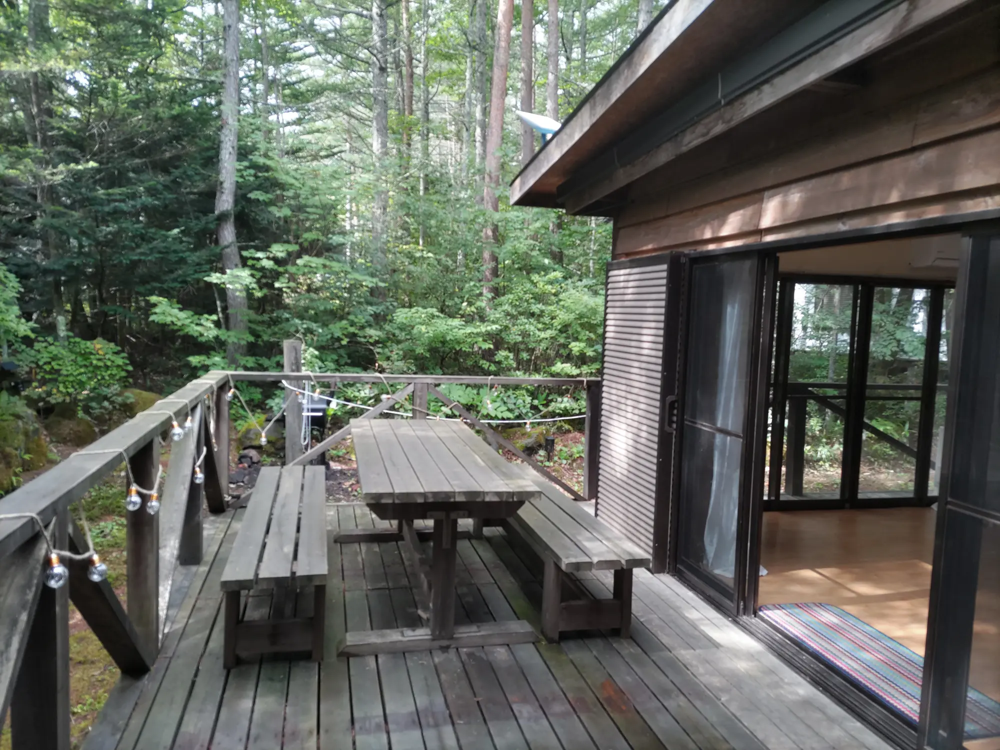
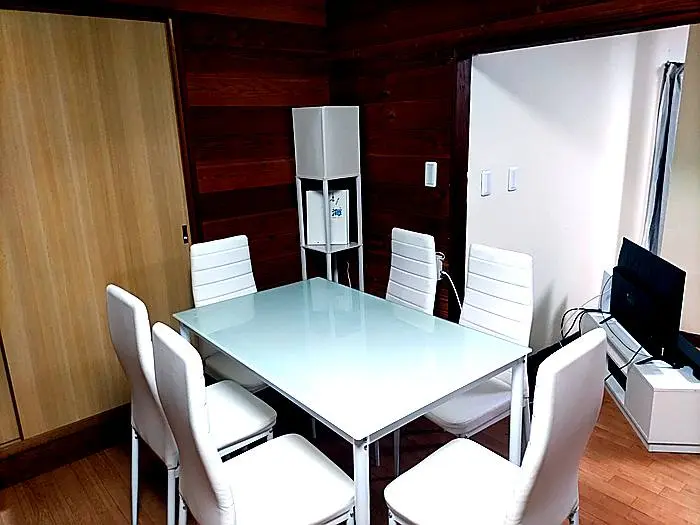
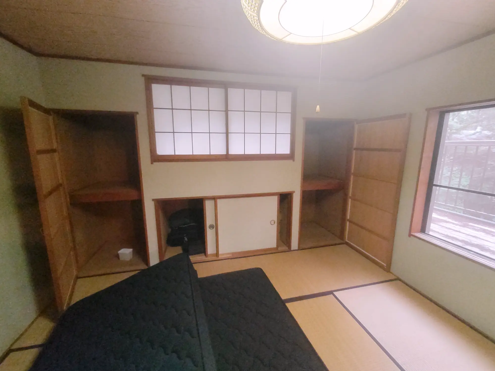
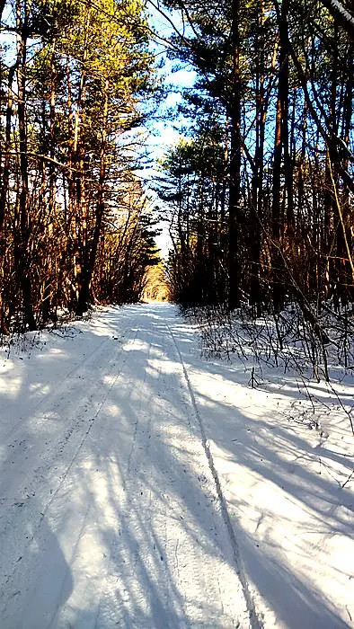

Real place · Real seasons
Forest,
inside & out.
掲載写真はすべてRUTA77と周辺で撮影した実際の風景です。森に開かれたリビング、和室、デッキ、浅間山麓の季節をご覧ください。










Private day use
一日一組だけ。
現在は宿泊施設として営業していません。コワーキング、ヨガ・リトリート、少人数の創作利用についてお問い合わせいただけます。安全とプライバシーのため、正確な住所は予約確認後にご案内します。
お問い合わせ →